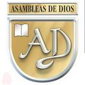

Encaminados en la palabra
Como seres Humanos, tendemos a pensar que el tamaño de una iglesia,la popularidad, el tamaño de un ministerio son la base del exito de la iglesia, por lo tanto la iglesia mas grande o la mas popular o exito de un predicador son los modelos a seguir. Sin embargo, este exito aparentemente podria no ser el exito de acuerdo a las escrituras biblicas sino la sana doctrina y el predicar que Cristo biene pronto.

NUESTRA HISTORIA
Toda historia tienen un gran inicio nosotros lo tenemos.
La Iglesia Fuente de Esperanza fue fundada originalmente en monterrico 24 de Diciembre en el año 1995. Esto ocurrió cuando un grupo de personas, encabezadas por Luis carlos barria, se reunían haser cultos para orar, leer la Biblia y estimularse unos a otros a realizar buenas obras. En 2008 bajo la guianza de Dios se estableció formal y legalmente, como iglesia Cristiana nasciente
La Iglesia Fuente de Esperanza se Encuentra bajo el concilio de las Asambleas de Dios
LA IGLESIA COMO TEMPLO DEL ESPÍRITU
Hemos afirmado que la Iglesia llega a ser Cuerpo de Cristo por obra del Espíritu Santo (1 Cor 12, 13). Y de hecho, la comunidad primitiva, desde el inicio, tuvo una muy clara conciencia de haber recibido ese "poder de lo alto" (Lc 24, 49; Hech 1, 8) como primer fruto y prenda de la salvación, que la establecía como una realidad sobrenatural (Rom 8, 23; 2 Cor 1, 22; Ef 1, 13s). Para la Iglesia apostólica la presencia del Espíritu Santo era una realidad de hecho y que constituía un dato de la máxima importancia, expresado en la gran cantidad de carismas existentes (1 Cor 12-14; 1 Cor 1, 7; Gal 3, 2-5; Rom 12, 6-8). En ese mismo sentido se entiende también la "preocupación" del Espíritu por la suerte de las iglesias en el relato de los Hechos: el Espíritu es el que llama, conduce, ordena y mantiene la acción de la Iglesia: Hech 5, 3.9; 9, 31; 15, 28; 20, 28. La realidad de la Iglesia no puede ser entendida sin ese fundamento y donación desde lo alto por la acción escatológica de Dios (cf. Ez 36, 27; 1 Cor 3, 16s).
(c) Todos los derechos reservados - LUIS CARLOS BARRIA - 2022